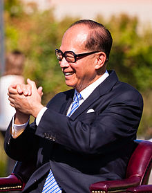

Sir Ka-shing Li, GBM, KBE, JP (born 29 July 1928 in Chaozhou, China) is a
Hong Kong business magnate, investor, and philanthropist. According to Forbes,
as of March 2016 Li is the richest person in Hong Kong and the second richest
person in Asia, with an estimated net worth of US$27.1 billion.
He is currently
the chairman of the board for CK Hutchison Holdings; through it, he is the
world's leading port investor, developer, and operator, and the largest health
and beauty retailer in Asia and Europe.
Considered one of the most powerful figures in Asia, Li was named "Asia's Most
Powerful Man, Li Ka-Shing" by Asiaweek in 2001. His companies make up 4% of the
market capitalisation of the Hong Kong Stock Exchange. Forbes Magazine and the
Forbes family honoured Li Ka-shing with the first ever "Malcolm S. Forbes
Lifetime Achievement Award" on 5 September 2006, in Singapore. In spite of his
wealth, Li has cultivated a reputation for leading a no-frills lifestyle, and is
known to wear simple black dress shoes and an inexpensive Seiko wristwatch.
He
continues to live in the same house as he has for decades, which has now become
one of the most expensive districts in Hong Kong, Deep Water Bay in Hong Kong
Island. Li is also regarded as one of Asia's most generous philanthropists,
donating over US$2.56 billion as of April 2016 to charity and other various
philanthropic causes.Li is often referred to as "Superman" in Hong Kong because
of his business prowess.
Li Ka-shing was born in Chaozhou in Guangdong province, China, in 1928 to
Teochew parents. Due to his father's death, he was forced to leave school before
the age of 15 and found a job in a plastics trading company where he worked 16
hours a day.
In 1950 he started his own company, Cheung Kong Industries. From
manufacturing plastics, Li developed his company into a leading real estate
investment company in Hong Kong that was listed on the Hong Kong Stock Exchange
in 1971. Cheung Kong expanded by acquiring Hutchison Whampoa and Hongkong
Electric Holdings Limited in 1979 and 1985 respectively.
A Harvard Business School article summarises Li's career in the following way:
From his humble beginnings in China as a teacher's son, a refugee, and later as
a salesman, Li provides a lesson in integrity and adaptability.
Through hard
work, and a reputation for remaining true to his internal moral compass, he was
able to build a business empire that includes: banking, construction, real
estate, plastics, cellular phones, satellite television, cement production,
retail outlets (pharmacies and supermarkets), hotels, domestic transportation
(sky train), airports, electric power, steel production, ports, and shipping.
Li's businesses cover almost every facet of life in Hong Kong, from electricity
to telecommunications, from real estate to retail, from shipping to the
Internet.
The Cheung Kong Group's market capitalisation is HK$1,193 billion
(US$154 billion) as of April 2016. (This includes the Group's controlling stake
in 15 listed companies around the world.) The Group operates in over 50
countries and employs around 300,000 staff worldwide.